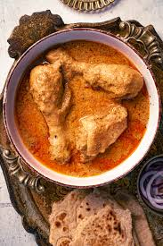

Qorma
Home

Ingredients
- Meat (chicken or mutton)
- Yogurt
- Fried onions
- Spices (garam masala, coriander, etc.)
Steps
- Fry onions – Golden fry sliced onions in oil
- Add meat – Cook meat with ginger-garlic paste and spices
- Mix yogurt – Stir in yogurt and let it simmer
- Cook – Cover and cook until meat is tender and oil separates